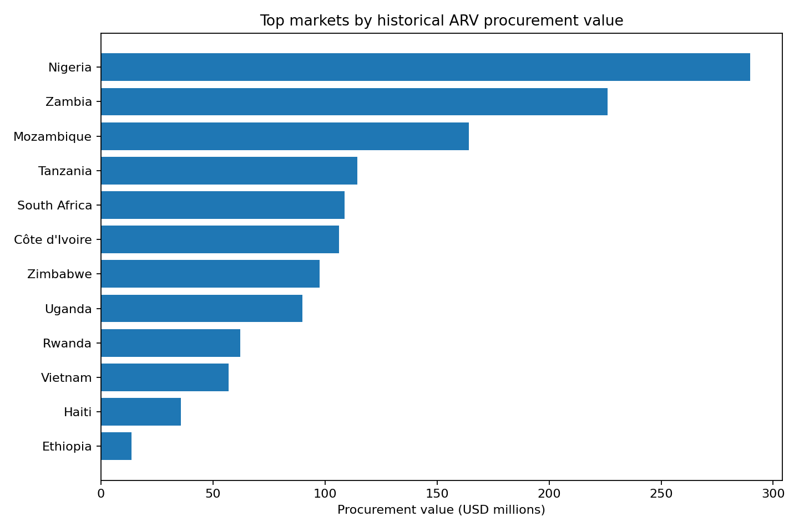
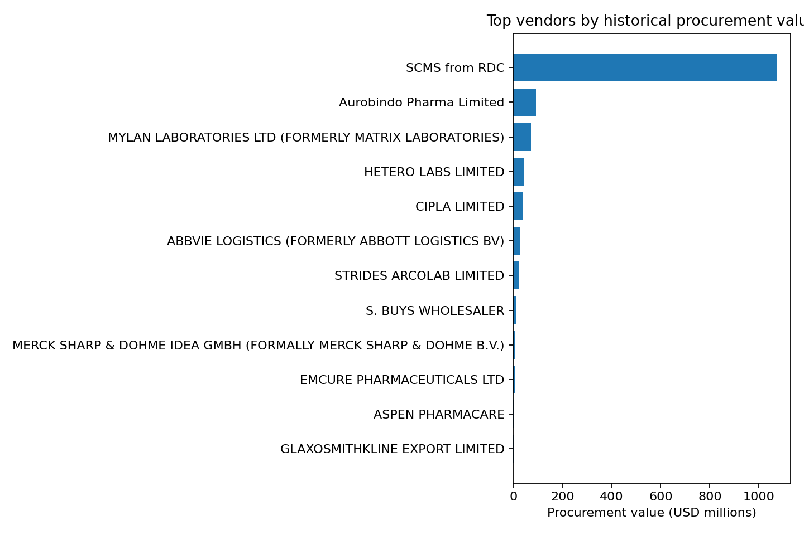
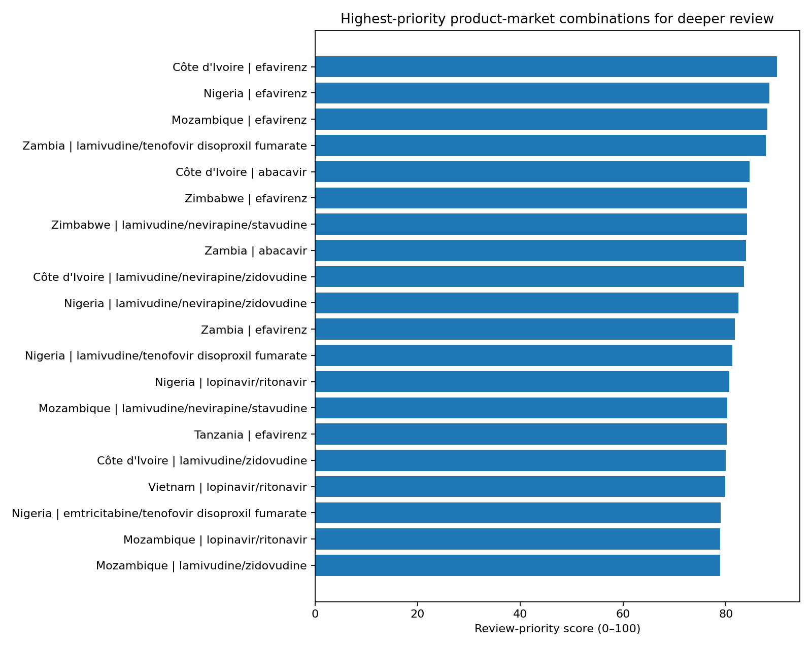

Pharmaceutical Procurement Intelligence
A compact decision-support prototype using historical public global-health procurement data to identify product-market combinations that deserve deeper pricing and supplier review.
Highest review-priority signals
| Market | Medicine | Transactions | Vendors | Price dispersion (%) | Top vendor share (%) | Review score |
|---|---|---|---|---|---|---|
| Côte d'Ivoire | efavirenz | 69 | 1 | 198.3 | 100.0 | 89.9 |
| Nigeria | efavirenz | 77 | 1 | 117.9 | 100.0 | 88.5 |
| Mozambique | efavirenz | 43 | 1 | 201.3 | 100.0 | 88.1 |
| Zambia | lamivudine/tenofovir disoproxil fumarate | 17 | 1 | 115.5 | 100.0 | 87.8 |
| Côte d'Ivoire | abacavir | 36 | 1 | 117.2 | 100.0 | 84.6 |
| Zimbabwe | lamivudine/nevirapine/stavudine | 57 | 1 | 33.1 | 100.0 | 84.1 |
| Zimbabwe | efavirenz | 53 | 1 | 141.9 | 100.0 | 84.1 |
| Zambia | abacavir | 37 | 1 | 53.4 | 100.0 | 83.9 |
| Côte d'Ivoire | lamivudine/nevirapine/zidovudine | 47 | 1 | 30.2 | 100.0 | 83.5 |
| Nigeria | lamivudine/nevirapine/zidovudine | 176 | 1 | 25.1 | 100.0 | 82.4 |
| Zambia | efavirenz | 87 | 3 | 69.9 | 97.0 | 81.7 |
| Nigeria | lamivudine/tenofovir disoproxil fumarate | 45 | 2 | 70.2 | 99.8 | 81.3 |
The score combines historical procurement value, within-product price dispersion and supplier concentration. It is a screening signal, not a claim that a transaction is inefficient.
Market footprint

Supplier footprint

Review-priority ranking

What this could become
An automated intelligence workflow can ingest tender and procurement feeds, standardize medicine/formulation identifiers, benchmark new purchases against historical ranges, detect supplier-concentration shifts, and surface review alerts to commercial or procurement teams.
Important context
This first build is historical and should not be read as a representation of current market prices. Procurement terms, freight, contract structure, quality requirements and geography can legitimately explain price variation. The project is designed to demonstrate a transparent analytical workflow rather than assert procurement wrongdoing.